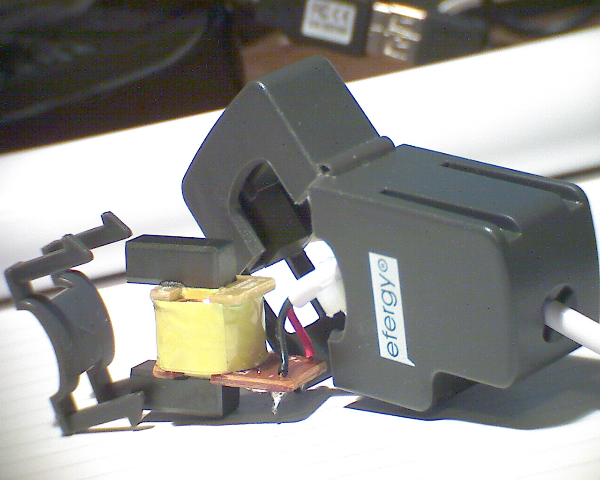
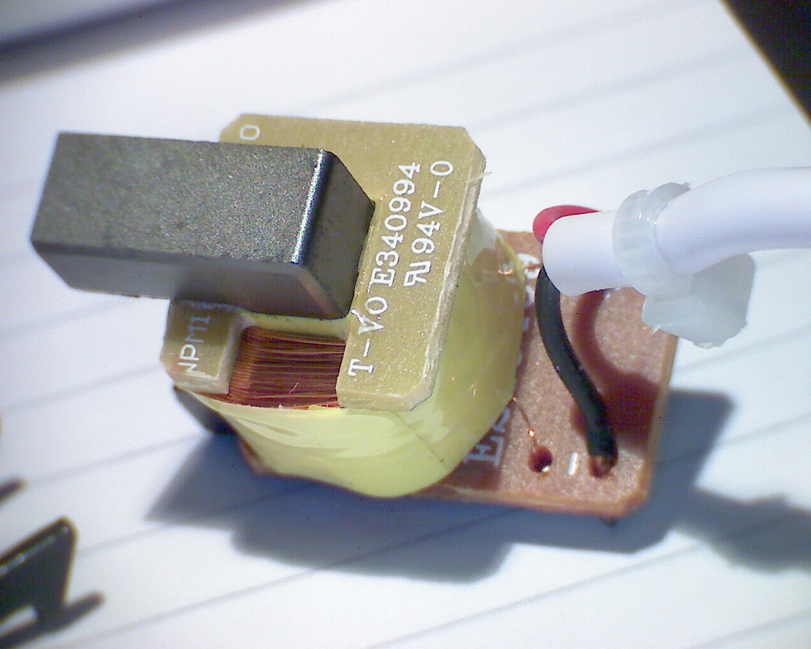
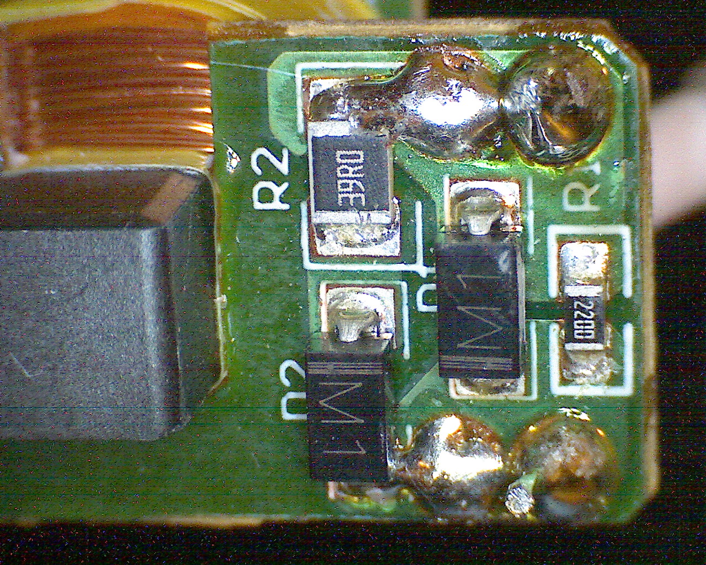
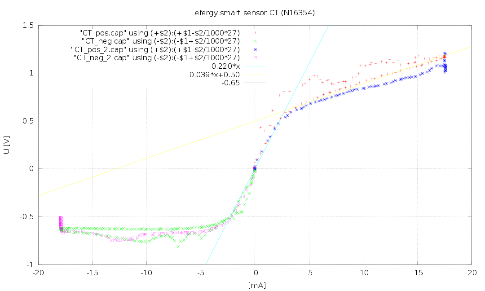

Hey guys! Hope everything is fine.
I would like to ask wich clamp do you sugest me to use: Efergy or SCT 100.
O noticed that on the first openenergyproject you started using Efergy but after you chnged to SCT.
Can you help me??
Great Thanks/Muito Obrigado
:)
Re: Efergy vs SCT 100 clamp
We have standardized on the YHDC SCT-013-000. We would recommend you use this CT.
Re: Efergy vs SCT 100 clamp
Is it because a difference in the number of coils between the two CT (or other technical reaasons), that you are suggesting the SCT ? The prices seem quite similar...
What a bout a self construction of the CT ? The idea is not about the cost, but because in case many lines have to be monitored, the proposed CT is quite large and takes a lot of room inside the AC box in the wall.... this of course will change the ohm value of the resistance, but it will allow to spare some space inside the box....
I don't remember exactly where, but I've already see some project with a custom CT with a very small magnet, with some coil over it.
Anyone experimented this solution ?
Re: Efergy vs SCT 100 clamp
yes that is my question aswell.. since i alreayd bought an efergy sensor, therefore the whole burden resistor and rvd circuit doesnt work out with the efergy sensor???
Re: Efergy vs SCT 100 clamp
Efergy CT has 1350 turns while the YHDC SC YHDC SCT-013-000 has 2000. A suitable burden will need to be calculated: http://openenergymonitor.org/emon/buildingblocks/ct-sensors-interface.
Note: new testing has uncovered that the Efergy CT contains extra components which result in the output voltage being non-linear with regard to the input current above 0.4V. Thus for an accurate and linear representation of primary current a very low valued burden resistor is required, which severely limits the output voltage available.
We intend to publish more details soon regarding recent further testing of the Efergy and YHDC SCT-013-000 CT's.
Re: Efergy vs SCT 100 clamp
Hey guys. Great thanks for your answers. Great help :)
One more thing. Do you know the current sensors that use Hall Effect? Can you tell the differences between the two types and it advantages and disadvantages?? Did you use it sometime?
Re: Efergy vs SCT 100 clamp
Another 2 question.
Any of you know where to find the spreadsheet of Efergy. I asked to the company but they told that they can't send it...
To conclue any of you know about CR Magnetic Sensor ???
To you thing it's easy to connect it using your SCT data??
Obrigado ;)
Re: Efergy vs SCT 100 clamp
Received my Efergy CT today and while I was playing with it and wondering what extra components might be in there, something magic happened... it opened up almost on its own.

The images show the CT coil and the PCB. It appears as if the sensor has a builtin resistor of 220R and an M1 (N4001) diode across it. There is another M1 (N4001) diode with opposite polarity, but that has an extra 39R resistor in series.


Thus, the Efergy CT sensor does not need any burder resistor at all and will limited the voltage in one current direction to 0.7V from D1 and more or less to a 39R resistor otherwise. Not sure, what exactly they wanted to achieve with this circuit, but it seems that they intended a better resolution for small currents where the 220R is in effect and the diodes are below their threshold and block. Reaching 0.7V one current direction is simply limited to that voltage, while the other one sort of switches to a lower 39R giving a wider measurement range, but at less resolution.
There are several possibilities now: One would be to model the circuit's U-I curve and calculate or measure a lookup table. The next possibility is to unsolder the diodes and replace the 220R resistor. I'd rather leave it in and use a voltage divider with something in the 100k range to bring the voltage down to a suitable level for the AVR ADC.
Probably the most elegant solution would be to make the circuit symmetric for both positive and negative current and adjust the resistors in a way that the U-I curve becomes pretty much logarithmic. Then the voltage would no longer be proportional to I, but to ln(I + 1). This would give a constant relative error as opposed to a constant absolute error. It would allow a better accuracy for small currents at the expense of larger currents. Any one wants to model this and post suitable values?
Re: Efergy vs SCT 100 clamp
Are the extra components easy to bypass? Have you tried the results with these components bypassed?
Re: Efergy vs SCT 100 clamp
Haven't tried yet. But I see no reason, why it would be difficult to unsolder the SMD components. I just thought it would be nice to share the information as there seems to be some confusion about the inner workings of these CTs.
Re: Efergy vs SCT 100 clamp
Hi Marc_Eberhard,
I am one of those who are confused about the CT, do you know any thing that I can read to understand it? A link, pdf, book...?
Thanks
Re: Efergy vs SCT 100 clamp
... unfortunately, no. All my searches on the manufacturer's website and the Internet in general did not turn up any specific information on the design of these CTs. However, with the circuit known, there is not much more information anyone would need anyway. And it should be easy enough to convert them to standard CTs by unsoldering the extra SMD components.
In case you're looking for general information about CTs and not just this specific one, I would suggest the explanations in the build guides on this website. They include a lot of information on how they work and how to work out the value for the burden resistor.
Re: Efergy vs SCT 100 clamp
Finally found the time to unsolder the CT coil and measure the U-I curve for the PCB:

This confirms the original observation for the circuit.
Re: Efergy vs SCT 100 clamp
Good work investigating the efergy CT.
Here's the test report for the YHDC SCT-013-000 Current transformer courtesy of Robert Wall:
http://openenergymonitor.org/emon/buildingblocks/report-yhdc-sct-013-000-current-transformer
Re: Efergy vs SCT 100 clamp
When D2 enter in conduction region, the equivalent resistor is formed by parallel of R1 (220 Ohm) and R2 (39 Ohm) -> 33,13 Ohm.
The slope of second part of graph is not 0.039*x+0.50 but 0.033*x+0,50.
For this CT we have a problem to maintain accurate reading when we are in the region of conduction - non conduction of diode.
For this reason I've cut off the extra components (cutted trace between D2 and R2 ; unsoldered D1 and R1) and inserted a burden resistor directly in to the jack.
Specification for that Efergy CT
Coil resitance ：52.5±2 Ω
0.2-95Amp <10%
I hope this is usefull for you.
Regards
Re: Efergy vs SCT 100 clamp
Well spotted! I fully agree.
Thanks for the detailed data on the CT coil. I have also now unsoldered R1 and D1 plus replaced D2 with a piece of wire. Thus, my CT now has just the 39R as a burden.
One question about your data: You state 1350 turns, but a 1400:1 current ration. How does that fit together?
Re: Efergy vs SCT 100 clamp
Your doubt is also my doubt and I have not any plausable answer for the moment.
I've received this data directly from Technical Staff of Efergy and I posted as is.
PS: I've putted the burden resistor in the jack for this reason :
I can extend the wire between CT and logic how long I want without having any problem of wire resistance and without any problem of electromagnetic interference along the wire ;-)
If you want made an extra security in case the wire was accidentally cutted, insert 2 Zener (>10V) in opposite way directly into CT.
Regards
Re: Efergy vs SCT 100 clamp
I'm using a shielded audio cable instead of the cable that comes with the CT to keep noise under control. The wire resistance doesn't really matter as the input impedance of the analogue frontend is in the 100ks region, so it should do fine as a voltage source and I don't need to worry about a cut cable. I thought it's best to modify the circuit as little as possible. The 39R is matched to the coil and I'm not sure what wattage the Zener diodes would need to be in an extreme case.
Re: Efergy vs SCT 100 clamp
" ...and I'm not sure what wattage the Zener diodes would need to be in an extreme case."
Easy .....:
CT Ratio = 1350 (or 1400)
I max = 100A
so the maximum current in secondary is 100/1350 = 0.074 mA
If Vz = 10V -> Pz=Vz*Iz = 10*0.074 = 740mW
A Zener of 1W is ok; for example 1N4740A.
Re: Efergy vs SCT 100 clamp
... well, that's if everything is according to the design rules. But if there is a shortage in the measured circuit, you can get more current until the fuse blows. And that's the bit I struggle to estimate reliably. How much current for how long? That would convert into an amount of energy to be absorbed in the shunt / Zener diodes. By sticking to the original design I hope that they will have tested these things and provided enough headroom for the resistor rating.
Re: Efergy vs SCT 100 clamp
I understand what you intend but if you have a short circuit on measured circuit,
there no difference between what happen to diode or to resistor, both will burn.
Anyway if your electrical implant is well done you have a fast intervention (few millisecond) of protection device due current load over-limit.
Re: Efergy vs SCT 100 clamp
Remember that the current transformer core will start to saturate when the primary current exceeds the design limit. This will mean the secondary current will be lower than you expect.
It is most unlikely that any protective device will operate in "few milliseconds". The minimum operating time of a Type 1 (fast) miniature circuit breaker is approximately 10 mS at 10 x rated current, rising to approximately 1 minute at 3 x rated current. (http://www.tlc-direct.co.uk/Book/3.6.5.htm)
Re: Efergy vs SCT 100 clamp
I agree about core saturation and many other things happen in case of short circuit.
"It is most unlikely that any protective device will operate in "few milliseconds". "
Why not ?
"The minimum operating time of a Type 1 (fast) miniature circuit breaker is approximately 10 mS at 10 x rated current, "
In case of short-circut is reasonable to have a current of 10 x rated current, and 10mS are few milliseconds.
"rising to approximately 1 minute at 3 x rated current."
this is only overload, not a short circuit condition how Marc hypothesized before;
when before I said ".... current load over limit ..." I was referring to over limit for short circuit in replay to Marc,
in fact we have 16kW of power for 100A (71Arms) @230Vac and this amount of power is not usually for home implant.
100A is resonable limit dimension for normal home implant and also the limit for that CT.
Sorry if I have not specified it better before.
Regards
Re: Efergy vs SCT 100 clamp
Simply because it is a mechanical device. It has moving mechanical parts that have mass and inertia, and they take time to move. The effect of all that, plus the risetime of the fault, gives you the pre-arcing time. Then how long does it take for the arc to extinguish? And when did the fault occur in relation to current wave?
The breaker might clear in significantly less than 10 mS. It might not. All that is guaranteed is that at the actual fault current, it will clear within the time that the manufacturer specifies.
You must rate your components to survive the energy that the protective device and the CT lets through, whether it is a high current fault or a prolonged overload. This is basic protection practice.
Re: Efergy vs SCT 100 clamp
I agree with you, and for the reason that you have indicated I invite to look how is made CT SCT-013-000 (http://openenergymonitor.org/emon/buildingblocks/report-yhdc-sct-013-000...).
2 Zener of 22V with power, judging from image, of 1W.
What do you think about that CT, where burden resistor is away from CT core, in case of cutted wire (or simply unplugged jack from logic, because the burden resistor is not in jack) and overload how Marc fears ?
And, for Efergy CT the package of 39 Ohm resistor is 1210 that means 0.5W;
so the maximum current for that resistor is (P=I^2*R) -> sqrt(0.5 W / 39 Ohm) = 113 mA which means a maximum primary current of 158A for CT Ratio of 1400. (D2 bypassed and without consider the coil saturation)
Re: Efergy vs SCT 100 clamp
Just to remind you, I did the research and wrote that report. There is a very clear warning in the report about the need to maintain connection to the burden at all times. The zener diodes are only there to prevent dangerously high voltages appearing on the connector. You must remember that when the core is driven hard into saturation, as it will be without a burden, dØ/dt becomes very small for a large part of the cycle and very large for only a very small part of the cycle as the primary current crosses through zero. Hence the secondary emf ( = n.dØ/dt) becomes very large but for very short periods, and the average power in the zener diodes remains small.
I did similar research and wrote a similar report on the Efergy CT (but without removing the internal components as Marc_Eberhard has done) but it was decided not to publish it, for various reasons.
The Efergy CT core is a similar size to the Yhdc one, so I expect the performance in the absence of the signal conditioning components to be broadly similar. I do not intend to make any more measurements on this part.
You say
Firstly, if you alter the circuit from the original, it is your responsibility to specify the correct components. Secondly, you cannot ignore saturation (it actually helps you!). When the core is starting to saturate, the primary and secondary waveforms are no longer the same shape: they are no longer related directly by the turns ratio, so you cannot relate 113 mA secondary current to 158 A primary current. You can see this in the screenshots in section 7 of the report. So, sadly, your 158 A is wrong.
Re: Efergy vs SCT 100 clamp
"So, sadly, your 158 A is wrong"
I know that it's wrong, in fact I specify that this value is without considering the saturation, so this is the worst case.
"The Efergy CT core is a similar size to the Yhdc one, so I expect the performance in the absence of the signal conditioning components to be broadly similar."
And this is what I try to say.
Re: Efergy vs SCT 100 clamp
Thanks for following this up! My conclusion is that the 39R should have sufficient headroom to take the heat in an overload / short circuit situation without blowing up. As I said, I already assumed that Efergy would have made similar calculations and hopefully even some tests. As the circuit modification is fairly minimal, I think I'm on the safe side. Also, as pointed out, by leaving the burden in the CT there is no risk of high voltages in case of a cut or disconnected cable. Yes, it does mean that I now have a voltage source and the sensor is more affected by noise on the cable. But as I said, I'm using a shielded cable and that's a price I'm happy to pay for the overload and high voltage protection I get.
Re: Efergy vs SCT 100 clamp
Marc:
With a source impedance of 39 Ohms in parallel with the coil (i.e. not greater than 39R even at high frequencies), I don't think noise pickup will be a major problem. As you say, a good quality twisted pair cable with braided screen, e.g microphone cable, will minimise any pickup (earth the screen at the emonTx end). With that impedance, the problem is more likely to be induced currents rather than voltage. The standard recommendation is to not run parallel and close to current carrying conductors and cross them at right angles.
Re: Efergy vs SCT 100 clamp
Marc, don't forget if you have a 100A in primary, you will have 71,4 mA in secondary. With burden resistor of 39 Ohm you have 7.8 Vp-p.
If you adopt this circuit http://openenergymonitor.org/emon/buildingblocks/ct-sensors-interface you will have +6.4V and -1.4V as input to analog port of Arduino and this will damage Arduino.
You must reduce the value of burden resistor, for example introducing a resitor in parallel (into the jack or where you prefer).
This calculation are based for Arduino powerd at 5Vcc, for 3.3V the values are different but easy to calculate
Re: Efergy vs SCT 100 clamp
paolo563: I'm not using the standard frontend, but one with a +/- 15V range and additional overvoltage protection.
Re: Efergy vs SCT 100 clamp
Hi. I received my order from the openenergymonitor shop recently, and have just completed building the NanodeRF + emonTx.
I have a couple of Efergy CT sensors that i would like to use with the emontx. Can some one please guide me on how i should proceed if i was to desolder the additional compnents in the Efergy (as described above). If I leave the 39ohm burden resistor in place, do i also leave the 18ohm resistor on emonTx in place?
Regards
Jetinder
Re: Efergy vs SCT 100 clamp
You only need one burden resistor. Your best solution will be to remove all the resistors & diodes in the Efergy c.t. and replace them with a single burden resistor which you can calculate.
The Efergy c.t. ratio is supposed to be 1350:1 but I measured 1410:1, and you need to develop about 1.1 V rms across the burden resistor at the maximum current you want to measure. Of course, if the burden you calculate is close to one of the resistors you have, use it!
E.g. You want to measure full scale = 50 A
Secondary current = 50 / 1350 = 37 mA
Burden = 1.1 V / 37 mA = 29.7 Ohms.
27 Ohms or 30 Ohms would be suitable. 33 Ohms would not be, because the peak-peak voltage exceeds the 3.3 V input range of the emonTx.
Re: Efergy vs SCT 100 clamp
Here is some info about WattsOn CT:s. Diykyoto claims these are 50A CT:s, physical measurements exactly same as for SCT-13. The coil resistance is 156 Ohm and burden resistor 717 Ohm.
Maybe there is a way to re-use these as the WattsOn wireless transmitter got dead in a thunderstorm - no wonder as there is no current clamping diodes in the design.
Re: Efergy vs SCT 100 clamp
I assume the burden resistor is the blue component I can't quite read the colour code of! (Is it 680R that is on the top end of tolerance?). Are there any components other than the burden on the circuit board? Do you have any idea of the turns ratio, because 717 Ohms for a burden sounds unreasonably high - it may be that the resistor that you're looking at is just there to hold the voltage down if the c.t. is unplugged while energised, and the real burden is inside the instrument.
The best way to get an accurate value for the turns ratio is to plot secondary current against primary. This will also give you the maximum current, which is where it starts to deviate from a straight line. The core looks to be about the same size as the YHDC, so I would expect the performance in terms of the maximum power (VA) to be similar.
When you know these things, it should be a comparatively simple matter to integrate this into an emonTx / Arduino design.
Re: Efergy vs SCT 100 clamp
Ok- cut the "burden resistor" of from the WattsOn CT. After cutting the resistor off from the CT the measured primary/secondary current ratio is the same as the SCT-13, anyhow it requires calibration value of around 168 instead of the standard 111.1 for SCT-13.
Dont understand CT operation well enough to say why ?
Anyway when testing I noticed that the standard burden resistors on EmonTX board really have an effective tolerance difference. Using the same CT the watts output varies as per below tracing. This to me means that the calibration needs to be done for each channel differently if accuracy is needed.
Re: Efergy vs SCT 100 clamp
The burden resistors in the emonTx are 1% tolerance, therefore if you can measure alternating current to this or better accuracy, you can trim the calibration to give the correct values.
If you have two or three channels in use (say for p.v. generation and domestic load), you can match them quite closely. Before calibration, if you are unlucky and one burden resistor is 18R - 1% and the other is 18R + 1%, they will read 2% different.
I don't understand why you should need a calibration constant of 168 but it is certainly nothing to do with the c.t. You measured that conclusively at 50A/25ma (= 2000:1, as you say the same as the YHDC 100 A c.t.). 168 is about the right number for a 12 Ohms burden. Are you using the standard sketch? If the sketch is not reading the reference voltage correctly, that could be a reason (the reference voltage is measured - SUPPLYVOLTAGE - in EmonLib.cpp. The value should be close to 3300).
Note: you can expect a very high voltage to appear at the c.t. terminals if you unplug it whilst it is energised and a primary current is passing. You might want to put two 4.7 V zener diodes in series back to back where the 717 Ohm resistor was to clamp the voltage to a safe value.
Re: Efergy vs SCT 100 clamp
Yes, i measured the same 49.68A/24,8mA - but on the other hand diykyoto say that these are 50A CT:s so maybe I missed something. Ordered one additional sct-13 just to do a bit of comparison here. My other sct-13 are already in use.
Re: Efergy vs SCT 100 clamp
I don't think you missed anything, you didn't carry on measuring! If you had measured currents above 50 A, you might have seen the secondary current was less than expected. The place where this difference becomes unacceptable is the maximum current. I plotted the curve for a YHDC c.t. up to 250 A (section 7 in here). It got warm but I was quick and no harm was done. (Hint: pass the primary winding through the core many times to multiply the current - I used 5 A for each measurement and finished at 50 turns = 250 A for the last measurement).
Re: Efergy vs SCT 100 clamp
Hi,
I got one of these Sparkfun 60A clamps. I wonder if this one needs burden resistor at all? The datasheet states that the voltage output type ones have built-in sampling resistor.
Greg
Re: Efergy vs SCT 100 clamp
I'm just testing an SCT-013-060 type 60A clamp against the Efergy. The Efergy displays the true/real power in kW. The Sparkfun clamp connects straight to the Arduino 5V and the analog input with the "voltage and current" sketch of the EmonLib. The test rig is an extender with the live wire exposed for the clamps. There are appliances connected to the extender such as soldering iron, laptop charger and lamp. Checking the real power from the Arduino+SCT combo (no external circuit needed since the datasheet states that the SCT-013-060 has a built-in sampling resistor) with the Efergy's figures it seems that the two real power values correspond to each other (Arduino RP x 20 = Efergy RP). The values on the Arduino serial monitor swing slowly (~0.5Hz) but the peak value corresponds to the Efergy kW figure. My only worry is that I cannot pass/get the true power variable from the emon1.serialprint(); function. Any ideas how to do that?
Re: Efergy vs SCT 100 clamp
? ? ?
The Real Power is the first variable printed by serialprint().
Real Power is also a public variable in the class EnergyMonitor (look at emonlib.h) so you can extract the value as xxx.realPower, where xxx is the instance of the EnergyMonitor class., e.g emon1.realPower.
Re: Efergy vs SCT 100 clamp
How does the calibration bit work? What does it exactly do?
Re: Efergy vs SCT 100 clamp
Thanks, Robert!
Re: Efergy vs SCT 100 clamp
Electronic components cannot be made to exact values without great expense, so they come guaranteed to be within a band of values, typically ±1% or ±5% either side of the wanted value. Calibration is a means of putting that right in the maths.
Read the Building Blocks pages if you want the full details.